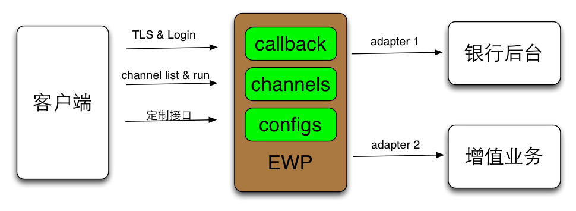

EWP开发手册
《EWP开发手册》主要描述基于EMP5.3开发移动应用的过程中，后端服务基于EWP的配置开发指南，
以及需要遵守的规范。
1 EWP开发简介

如上图所示，EWP开发的主要工作包括：
- 通过开发工具配置业务菜单（collection）和业务频道（channel），
定义业务频道的业务流程和接口规范，提供接口模拟报文给前端开发人员使用；
- 配置业务频道（channel）所使用的后台服务（通过adapter配置连接后台服务），
必要时开发单个channel的处理逻辑；
- 实现业务流程中主要功能接口的回调函数（callback）和其他公共逻辑，
例如握手流程中的init_content()，菜单获取接口的list_collection_items();